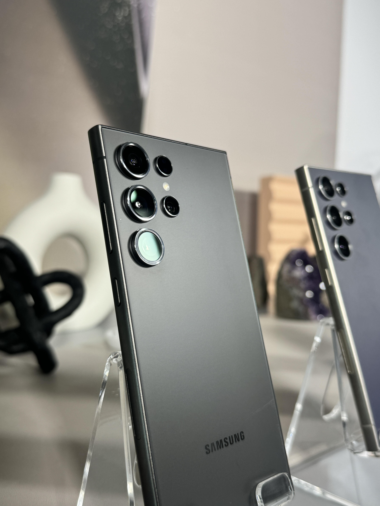

디스플레이
크기 (Main Display):
172.5 mm
해상도 (Main):
3120 x 1440 (Quad HD+)
종류 (Main):
Dynamic AMOLED 2X
색심도 (Main):
16M
최대 주사율 (Main):
120 Hz
카메라
후면 카메라 - 화소 (Multiple):
200.0 MP + 50.0 MP + 12.0 MP +
10.0 MP
후면 카메라 - 조리개 값 (Multiple):
F1.7,F3.4,F2.2,F2.4
후면 카메라 - 오토 포커스:
예
후면 카메라 - OIS:
예
후면 카메라 - 줌:
3배 및 5배 광학 줌, 광학 줌 수준의 2배 및 10배
줌(적응형 픽셀 센서 활용), 최대 100배 디지털 줌
전면 카메라 - 화소:
12.0 MP
전면 카메라 - 조리개 값:
F2.2
전면 카메라 - 오토 포커스:
예
후면카메라 - 플래쉬:
예
후면 카메라 - Laser AF 센서:
예
동영상 녹화 해상도:
UHD 8K (7680 x 4320) | @30fps
슬로우 모션:
240fps @FHD,120fps @UHD